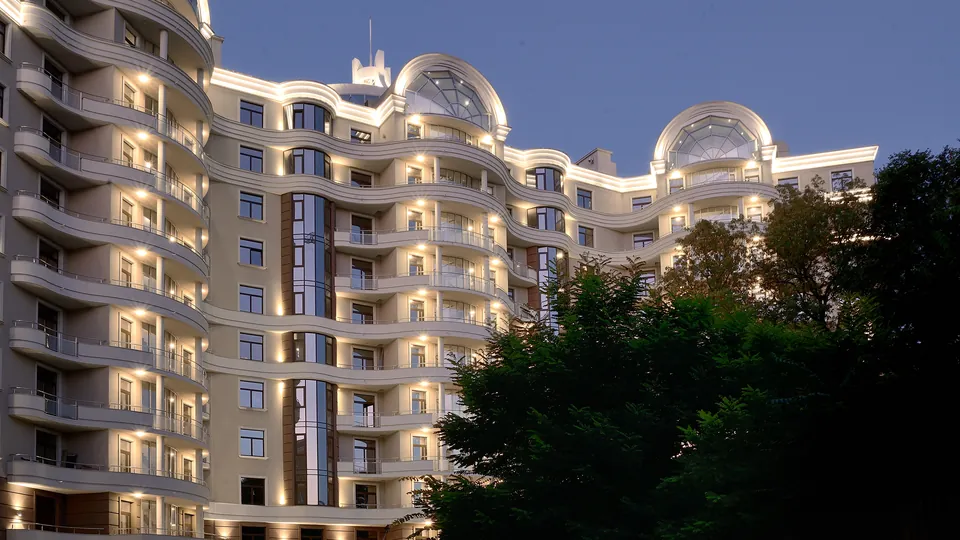
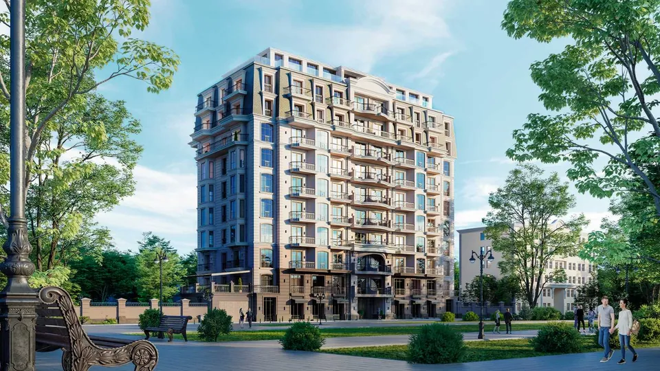

Будинки
Каркашадзе
Так одесити називають будинки, які будує холдинг ЗАРС — на прізвище засновника. Тридцять дев'ять будинків за двадцять дев'ять років, жодного масового. Два з них стоять тут, за чотириста метрів від моря.
Записатися на приватний показБудівельний холдинг ЗАРС · Одеса · від 1996
Французький бульвар, Приморський район · кільця дальності 250 і 500 метрів
Гіві Сілованович
Каркашадзе
1930 — 2006
У 1950 році його за розподілом направили в Одесу — на будівництво Одеського порту. Він лишився назавжди і віддав місту п'ятдесят п'ять років.
Пройшов усі щаблі виробництва, від майстра до керівника найбільшого будівельного комбінату «Одеспромбуд», паралельно закінчивши Одеський інженерно-будівельний інститут. Під його керівництвом відновлено десятки зруйнованих війною будівель, здано мільйони квадратних метрів житла, зведено житлові масиви «Черемушки», «Таїрова» і «Котовського».
На його рахунку — сотні соціальних об'єктів Одеси й області: обласна клінічна лікарня, госпіталь і санаторій інвалідів війни, навчальні корпуси Політехнічного інституту і Будівельної академії, школи, дитячі садки. У 1988 році Мінюгбуд направив його керівником радянських фахівців на будівництво стратегічних об'єктів в Іраку.
Компанію ЗАРС він заснував 14 жовтня 1996 року й керував нею останні десять років життя. За вагомий внесок у післявоєнну відбудову Одеси рішенням міської ради провулок Цегельний перейменовано на провулок Каркашадзе. Будинки, збудовані компанією, одесити називають Будинками Каркашадзе.
Третє покоління однієї родини
З 2006 року сто відсотків компанії належить родині засновника.
- Бочорішвілі Давид Муртазович
- Президент. Учень, послідовник і зять засновника. Закінчив ОІБІ за спеціальністю «Промислове та цивільне будівництво», у будівельній галузі з 1984 року. Входить до наглядової ради ОДАБА.
- Бочорішвілі Георгій Давидович
- Голова ради директорів. Онук засновника. Закінчив ОДАБА за спеціальністю «Промислове та цивільне будівництво» та ОНУ імені Мечникова за спеціальністю «Правознавство». Прийшов у компанію 2010 року.
Три правила, записані засновником
Тільки червона керамічна цегла
Головним будівельним матеріалом може бути лише червона ефективна керамічна цегла. Зовнішні стіни — 640 мм у будинку на Французькому бульварі, 29. Міцна, зносостійка, вологостійка, морозостійка, екологічна. У світі взагалі небагато висотних будівель із цегли.
Тільки історичний ареал Одеси
Будинки Каркашадзе будуються виключно там, де історія, архітектура та близькість до моря й парків роблять життя особливим: Французький бульвар, вулиця Довженка, провулок Каркашадзе.
Неухильне дотримання правил
Рекомендації та вимоги, сформульовані Гіві Сіловановичем, — не набір порад, а звід законів для команди. Вони стосуються і технічного боку будівництва, і концептуального.
Компанія в цифрах
від заснування 39будинків
збудовано 51 000 492цеглини
покладено 1000+дерев
висаджено в місті 640мм — товщина
зовнішньої стіни
Два будинки на Французькому бульварі

Французький бульвар, 29
Зданий · будівництво 2017–2020
Лауреат International Property Awards у чотирьох номінаціях. Десять поверхів, три секції, три квартири на поверсі, 400 метрів до моря і 40 метрів до парку.
Дивитися будинок
Французький бульвар, 29Б
Будується · плановий строк IV квартал 2026
Сорок вісім квартир на десять поверхів і два пентхауси. Тераса або балкон у кожній квартирі, стелі 3,15 метра, 500 метрів до моря.
Дивитися будинокПовний цикл
Холдинг сам проєктує, сам будує, сам вводить в експлуатацію і сам управляє готовим домом. Між задумом і консьєржем немає підрядника, на якого можна перекласти відповідальність.
- Девелопмент
- Сфера, у якій треба передбачити, що відповідатиме інтересам і цінностям клієнтів через багато років.
- Будівництво
- Компанія самостійно будує те, що створює в межах девелопменту. За 29 років — 39 будинків.
- Управління
- ZARS management бере на себе повний цикл: обслуговування, оренду, консьєрж-сервіс, оздоблювальні роботи, наповнення предметами мистецтва.
- Інвестиції
- ZARS invest — міжнародна компанія у складі холдингу, що спеціалізується на проєктах із найбільшим інвестиційним потенціалом.
Місто, а не лише майданчик
Стипендії ОДАБА
З 2015 року діє стипендіальна програма імені Гіві Сіловановича Каркашадзе. Щосеместру визначають найкращих студентів академії.
Понад 1000 дерев
Холдинг озеленює не лише власні об'єкти, а й бере участь у проєктах благоустрою Одеси.
Архітектурні Сезони
Перший в Одесі щорічний міжнародний захід, присвячений архітектурі, дизайну та урбаністиці.
Художній музей і МСМО
Комплексна підтримка Одеського національного художнього музею та участь у меценатській спільноті «Амбасадори культури» Музею сучасного мистецтва Одеси.
Визнання
- International Property AwardsФранцузький бульвар, 29 — нагороди у чотирьох номінаціях і номінація на найкращий проєкт Європи в категорії Best Residential High Rise Architecture
- REM Awards 2021Нагорода холдингу
- Realty Summit 2017 і 2019Надійний забудовник, від АН «Домінанта»
- Надбання ОдесиДиплом 2016 року та нагорода
- ТОП-10Диплом «ТОП-10 одеських будівельних компаній»
Приватний показ
Консультант відділу продажу покаже будинок особисто й відповість на питання щодо конкретних лотів, площ і умов.